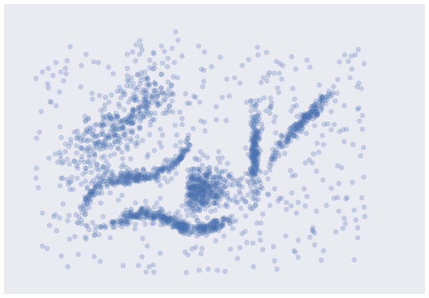
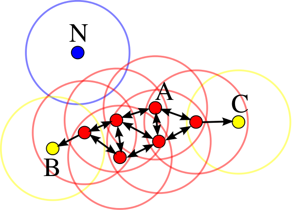
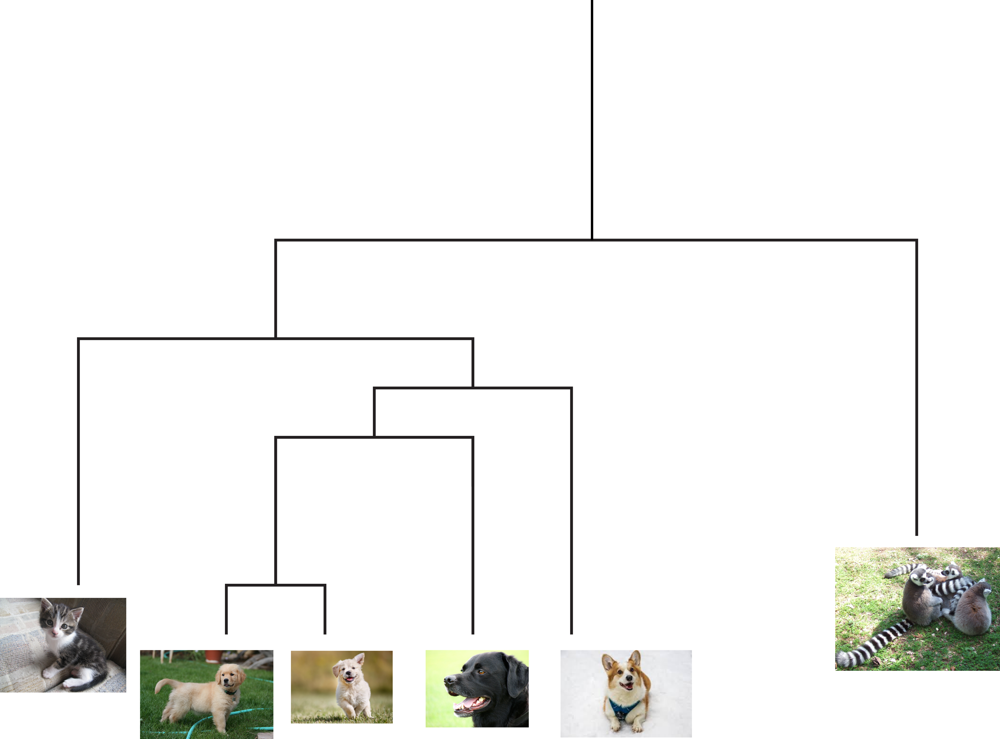

C is for Clustering
Clustering is useful when you want to find groups of related items. For example, these items could be documents, malware samples, or customers. Clustering is also referred to as unsupervised learning since it does not involve labelled data. High quality labelled data is often hard to get, so clustering is often a good method to analyze your data. We often use clustering methods (along with visualization) when doing exploratory data analysis (EDA) since it allows us to understand how the data clumps together.
What else can you use clustering for?
Anomaly/outlier detection
Since you know which group an object belongs to, you can say “show me the items which don’t belong to a group”. You can also look for points on the outer edges of clusters since they may also be anomalous.
Labelling points
You can even use clustering to help you label your data! Instead of labelling 100 images as dogs/cats individually, you could have groups of images which are much easier to label (i.e. “here are 24 dogs all grouped together”).

How do you actually cluster points together?
Take a look at the image below (courtesy of Leland Mcinnes). You can probably see which points should be grouped together but some points clearly look like they don’t belong to any groups.

The simple definition of clustering “find similar groups of stuff” sounds fairly simple at the surface. If you think about it a bit more you’ll realize that there are a number of questions that need to be answered:
- How do you define similarity? In every clustering algorithm you need to specify a way of measuring the distance between two points. This is often referred to as a distance metric. As you would expect, points are similar if they are close together (the distance between them is small) and less similar the farther apart they are. There are many kinds of distance metrics, and choosing the right wone depends on your data. For more about distance metrics see “E is for Embeddings” and “J is for Jaccard Metric”.
- Does every point need to belong to a group? Can a point belong to multiple groups? The answers to these questions depend on the algorithm. In some cases, points can only belong to one group. This is known as hard clustering. In other cases they have a probability associated with being part of a cluster. This is known as soft clustering (or fuzzy clustering). Some clustering algorithms will force every point into a group (whether it belongs in there or not), while others will just label those points as outliers/noise.
Types of clustering methods
Since the definition of cluster is so broad, there are many types of clustering algorithms. Here are a few broad categories:
Centroid based
In these algorithms, clusters are determined based on which centroid you are closest to. A centroid is just a point calculated by averaging all of the other points in a group. One popular centroid based method is k-means which works as follows.
- Pick k centroids (where k is the number of clusters in your data). For the sake of argument, let’s say we have 2 centroids.
- Randomly place the centroids
- Calculate the distance from each point to the centroid, and pick the closest centroid as its cluster id. For example if a point is closest to centroid 1 then it is part of cluster 1
- Recalculate the centroids as the average of all of the points in the cluster. Centroid 1 is now the average of all points in cluster 1, centroid 2 the average of all points in cluster 2, etc.
- Repeat steps 3 and 4 until your clusters stabilize (i.e. the cluster ids for your points stop changing)

There are a few issues with this method. The first is that it is really hard to know how many clusters you have ahead of time (i.e it’s hard to choose k). The second is that it doesn’t allow for clusters of different shapes since it assumes that all clusters are spherical. Finally, every point is forced into a cluster.
Density based
In density based clustering algorithms, clusters are areas with lots of points. If you look at the image above, this probably closely aligns with your intuition about what is/is not in a cluster. The clusters you identified have high density (lots of points in a small area). DBSCAN (density-based spatial clustering of applications with noise) is a popular density based clustering algorithm. It has two main parameters, min_points and epsilon. In order for something to be labelled a cluster, there must be at least min_points close together. If min_points is 10, that means there will be no clusters with less than 10 data points. Epsilon is basically “how far from a point do I look to see if it is close”. For each point, you can see how many other points are within epsilon. If there are at least min_points, then you have a cluster. In the image below, all of the red points (A) have at least 4 points (min_points=4) within epsilon distance. The yellow points (B and C) are also in the cluster because they are reachable from one of the red points. N would be labelled an outlier since it is not within epsilon of any points.

Choosing min_points is much easier than choosing the number of clusters ahead of time (which we needed to do in k-means). However, picking the correct value for epsilon can be tricky and is more of an art than a science. Another issue with DBSCAN is that it assumes all of the clusters have the same density, which is not always the case.
Distribution based
In these algorithms, you train sets of statistical models and points are assigned to a cluster based on which model they are most likely to occur in. One benefit of this type of algorithm is each point has a probability associated with belonging (e.g. 0.75 probability of being in cluster A, and a 0.25 probability of being in cluster B). This means soft clustering is baked into the algorithm, and if you want hard clusters (i.e. a point can only belong to one cluster) you can just choose the largest likelihood. One popular algorithm in this class is Gaussian Mixture Models, where you start with a set of randomly initialized Gaussian models and then update their parameters based on your data. Learning these parameters is done using an interative method called expectation-maximization algorithm. One downside of these types of models is that they may overfit your data. That is the model will fit your data very well but not generalize well to new data.
Connectivity based
Connectivity based clustering is also known as hierarchical clustering. One of the core ideas is that things can be grouped together at different levels. For example a picture of a golden retriever could be grouped with other retriever breeds, all dogs, common pets, all animals, etc. In this case other pictures of retrievers would be close, other dogs slightly further away, and then other animals further away from that. This creates a dendrogram (tree) and the clusters are determined by where you cut in the tree. For example in the figure if you cut at the first branch, you would have two clusters: one containing lemurs, and the other containing all of the pictures of cats/dogs. Cutting at the next branch down you would have three clusters: lemurs, cats, and all dogs.

There are basically two ways to create this dendrogram. The first is a bottom up approach where every point starts as its own cluster and then you merge clusters together. In the second method everything starts as its own cluster and then you iteratively break everything apart until each point is it’s own cluster. The difference between algorithms in this class basically differ on how you choose to measure the distance between clusters.
How do I choose which clustering (or class of) algorithm to use?
Some of this depends on your data. In practice many algorithms combine elements of these classes. One example of this is HDBSCAN (hierarchical DBSCAN), which is an extremely useful clustering algorithm. I’ll talk about HDBSCAN in more detail in H is for HDBSCAN but HDBSCAN is a good first choice. If you’re looking for a comparison of different clustering algorithms on the sample data I showed above, take a look at the link “Comparing clustering algorithms” in the resources below.
Other resources
- Comparing clustering algorithms
- Clustering: a guide for the perplexed - John Healy and Leland Mcinnes
- Crash course AI: unsupervised learning